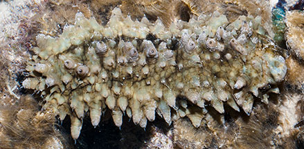
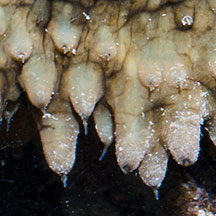
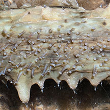
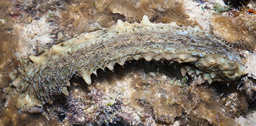
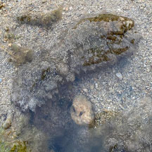
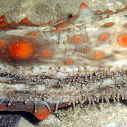
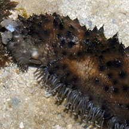

|
|
| sea cucumbers text index | photo index |
| Phylum Echinodermata > Class Holothuroidea |
| Durian
sea cucumber Stichopus horrens* Family Stichopodidae updated Apr 2020 Where seen? This large sea cucumber are sometimes seen on our Southern shores, on coral rubble and near living reefs. It appears to be more active at night, hiding in crevices during the day. Elsewhere it is common on rubble and sandy areas; hidden under rocks or dead corals. Sea cucumbers that look very similar include S. monotuberculatus, S. naso and S. quadrifasciatus. Precise identification can only be determined by looking at microscopic internal parts of the body. Features: About 20cm long, but can grow to 50cm long up to half a kilo in weight! Body hard heavy, squarish in cross-section, blunt at the ends. Upperside densely covered with large soft conical thorn-shaped structures - resembling the skin of the durian fruit. These thorns usually appear in two rows along the center of the upperside with a row of larger thorns along the sides near the base of the animal. Colours mottled greyish green with dark blotches. Sometimes also dark and other times bright orange. Elsewhere, highly variable, from grey to beige to dark red, dark brown, greenish-brown or black with different coloured blotches. Distinct flat underside, paler with many large tube feet. Mouth facing downwards with 20 feeding tentacles. It disintegrates when it is removed from water or otherwise stressed. Baby cucumbers: It reaches sexual maturity at 16-18cm. It has also been known to undergoe asexual reproduction by dividing into two (fission). |
 Pulau Semakau, Aug 11 |
 Close up of 'thorns' |
|
 Tube feet on the flat underside. |
 |
| Human uses: This is one of the
sea cucumbers whose body fluids are harvested in Malaysia for 'Air
Gamat', a local health tonic that believed to aid healing and other
ailments. Choo describes how in some places, the fluids are drained
from the sea cucumbers which are then returned to the net cages holding
them. The fluids are boiled in oil together with some herbs. It is commercially harvested many places for food. According to the IUCN Red List: "Although it is not one of the most important species (low value) for fishery purposes, it can may become more popular after the depletionof other species of higher commercial importance and value." |
*Species are difficult to positively identify without close examination.
On this website, they are grouped by external features for convenience of display
| Durian sea cucumbers on Singapore shores |
On wildsingapore
flickr
|
| Other sightings on Singapore shores |
 Pulau Semakau North, Sep 23 Photo shared by Tammy Lim on facebook. |
 |
||
 |
||
|
Links
|